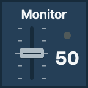
DFA fader + dial
Your imaginary monitor mix. Better?
Professional placebo equipment.
Feels like it did.
The fake fader is now a whole plugin.
21 deeply satisfying, entirely pretend studio
controls for your Stream Deck.
Go on. Move it.
Your mix is safe.
Press a key. Enjoy the ceremony.
Take full credit for the result.
A browser taste, using DFA's native key artwork and bundled sounds.
The plugin runs natively on your Mac. This page is its own little toy.
An old studio trick.
A very committed execution.
The engineer moves an unconnected fader.
"Better?"
"Perfect."
DFA is that fader, with more buttons. Real clicks, tiny mechanical performances and the solemn confidence of equipment doing something important. Every adjustment stays inside DFA.
Everybody's happy. Nothing has changed.
Every control works on a key.
Seven also work on Stream Deck + dials.

Your imaginary monitor mix. Better?
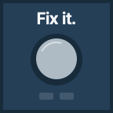
A brief repair. A decisive "Fixed."
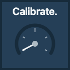
Measure, align, verify absolutely nothing.
More of what is never established.
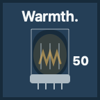
Bring an imaginary tube to "Toasty."
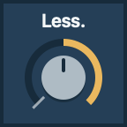
Independent of More. Both can be 100.
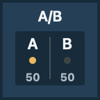
Two identical settings. Hear that?
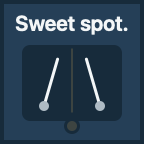
Two needles meet. There.
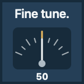
A careful journey back to the start.
One very authoritative rubber stamp.
At 100%, officially unwarranted.
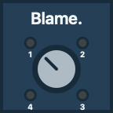
Cable. Room. Source. Previous engineer.
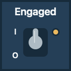
Disconnect the already disconnected.
Open the guard. Authorize nothing.
A spring-loaded answer to that request.
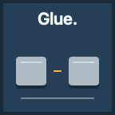
Two blocks. One convincing clunk.
Drain a little inspection window.
Turns its own tiny display off and on.
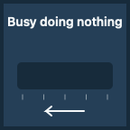
Progress. Second thoughts. Completion.
Dispenses one official unit. You're welcome.
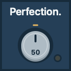
Polish. Inspect. Close enough.
Choose each button's main color, accent and label. Dial in 1-point or 5-point steps on value controls. Keep the sound, turn it down, or mute it. Reduced motion keeps the ceremonies steady.
Every placed control keeps its own preferences.
Even the useless things deserve boundaries.
A free Mac plugin by Austin Presley.
Get DFA for Macv0.5.03.3 MB. Developer ID signed. Apple-notarized.
Release notes and checksumsv0.5.0 is a public preview. The signed universal build has passed software tests, native simulations and real-executable scenario replays. Physical installation, key and dial feel, listening, and device lifecycle checks remain pending. Built for Apple silicon and Intel; the Intel slice and oldest supported macOS have not been run.
DFA changes its own pixels, bundled sounds and preferences. Your mix, system volume and other apps stay yours. No account, analytics or runtime internet connection. Apple's first-launch security check is separate.
DFA's original code and assets are proprietary. Official binaries are free to install and use. License and third-party notices.